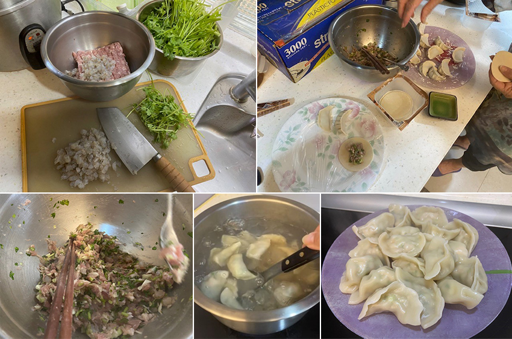
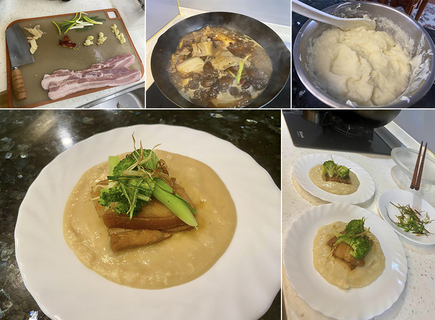
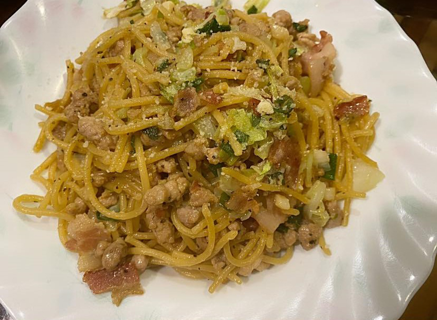

周末假日總是我在家做飯的好日子，平日週一到五晚餐由婆婆掌廚，到假日時由我負責，雖然沒硬性規定，偶爾婆婆假日也還是會進到廚房弄幾道公公愛吃的小菜，但沒上班的日子，我就能放鬆地想菜色、備菜、花時間嘗試之前看到的料理食譜，有時也能做個杯子蛋糕之類的烘焙點心。
是的，我還沒結婚前最喜歡的家事中，就是煮菜做飯。年輕在外讀書工作時，和幾個朋友合租房子，就偏愛找有廚房的公寓，大家一起偶爾可以下廚做點好料的，除了省錢也很有氣氛，讓租屋處也有「家」的味道和感覺，當時就覺得做菜能飽足、療癒鄉愁，居然也是凝聚氛圍的催化劑。
做料理除了參考食譜外，我還特別喜愛實驗性地結合經驗裡的料理方式，創新出一道屬於自己風格的料理，說是「創意料理」，那是成功時的美稱；一旦結合失敗，那就會變成一道惡夢，因為實驗總是會有失敗的時候。而無論如何，做菜對我而言就像一門藝術，各種食材、結合烹調方法、使用不同的鍋具，就能幻化出一道道療癒的美食，是非常有趣的。
以下是最近假日自作自受的三道料理，在不同的心境和情境下產出，完成時內心和嘴巴都得到滿足：
第一道是在意外的二日颱風假裡，因為想念香菜水餃，而決定自己動手製作，之前因為颱風導致香菜菜價高不可攀，原本固定採購的水餃店，也暫停香菜水餃的販售。水餃自己包的好處就是：可以決定內餡、大小尺寸。
*材料：全聯水餃皮、香菜、豬絞肉、蝦仁、高麗菜，簡單鹽、香油、白胡椒粉，調味完成。
*做法：所有食材、調味料攪拌均勻後，開始包餃子，包好餃子先放置冷凍庫快速定型，接著燒開一鍋水，放入餃子，煮至水餃浮起、餃子皮漲的鼓鼓地，就可撈起。
|  |
第二道是看完最近的Netflix夯劇-黑白大廚，決定復刻的一道料理-東坡肉佐馬鈴薯泥，當時看到這道，覺得將燉煮東坡肉醬油醬汁混入馬鈴薯泥中的做法，感覺創新，也想試著自己做做看，而且這樣的組合菜色，我應該也能完成。
*材料：豬五花肉、三星蔥、青花椰菜、鮮奶油、薑、蒜、辣椒、八角、醬油、米酒、糖。
*做法：
1.東坡肉：肉加薑片川燙後撈起，油炸至焦黃拿起，先炒蔥段、薑片、蒜粒、辣椒，加入肉塊，再加醬油、米酒、糖、八角、水燉煮。
2.配菜：三星蔥切絲油炸；青花椰菜，水煮後拌上橄欖油和蒜末，撒點海鹽調味。
3.馬鈴薯泥：先蒸熟馬鈴薯，趁熱拌入鮮奶油、少許海鹽調味，最後加入燉煮後的醬油肉汁拌勻，應該先將馬鈴薯泥過篩，口感會更細緻。
4.最後擺盤，順序由下至上是：馬鈴薯醬、肉塊（全聯買到的豬五花肉不夠厚，擺二片）、青花椰菜、炸過的三星蔥絲。
這次實驗心得：馬鈴薯泥微辣超級好吃！肉應該以大塊再燉爛一點，才有入口即化的感覺，下次再去豬肉攤挑塊上好黑毛豬肉來燉厚實東坡肉，還有我忘了白蘿蔔片，下次再加入，口感應該會更好。
|  |
第三道也算是看完黑白大廚後的後遺症吧？！本來都是規規矩矩煮義大利麵的，追完劇後，彷彿受到哪種啟發，決定以中式炒麵方式炒義大利麵。
*材料：義大利麵直麵條、培根、豬肉末、蒜末、高麗菜、蔥花、起司粉、橄欖油、義大利 香料、羅勒香料粉、海鹽、黑胡椒粒。
*做法：煮一鍋水，將義大利直麵放入鍋中，加點海鹽煮至八分熟，不要太軟。以中式炒鍋，放入橄欖油，加入蒜末爆香，先放培根（先切至小片）煎至微焦黃，放入豬肉末拌炒，加入高麗菜（切成小塊狀）、蔥花，大火快速拌炒一下，加入煮好的義大利直麵條，快速拌炒，讓所有食材混和到麵條裡，最後撒鹽、黑胡椒粒調味，起鍋前撒上起司粉。
被義大利麵愛好者的小女兒大讚好吃，並且說：媽媽，你可以去開店了！哈，讓家人吃得開心滿足就是我最好的成就感！至於開店，那就不必了。
|  |